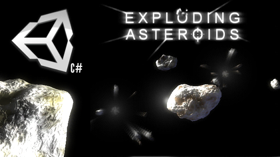

Exploding Asteroids
User/Developer Guide

Introduction

- 12 Dec 2013 Added integration with Unity physics while still being able to call explode() directly.
- 12 Dec 2013 Minor fixes.
- 19 Feb 2014 Added one new asteroid. Updated documentation.
- 16 Jun 2015 Added sound. Updated documentation.
Overview of the scripts and their role
Asteroid.cs
Exploding Asteroids' most iportant element is the Asteroid.cs script. This offers a single function API, called explode, that triggers a sequence of events that give the illusion of an explosion with dust and bits flying away.
- Instantiate several indipendent objects that represent the asteroid's bits.
- Create one or more dust clouds.
- Set the direction and speed of the parts that result from the explosion.
- Play a sound if an AudioSource is attached
- Destroy the gameObject (this)
In the inspector the asteroid will show its parameters as shown in the two following examples:


Initial Rotation Speed determines the axis and the constant spin of the asteroid.
Cracked Bits Prefabs is a list of prefabs that, as a requisite, must hold the AsteroidCraskedBit.cs script. All the parts that are created from the explosion will be random instances of these prefabs.
Minimum Number Of Bits is the minimum number of instances that are created by the Asteroid.expode function.
Maximum Number Of Bits is the maximum number of instances that are created by the Asteroid.expode function. This should be greater than or equal to Minimum Number Of Bits . The number of parts that is generated is always a random number between Minimum Number Of Bits and Maximum Number Of Bits .
Dust Prefabs is the list of prefabs that have the DustCloud.cs script attached to them. When the explosion takes place, each of these prefabs are instantiated once.
Starting Life is only used if you use the alternative function hit that whill be explained later on. This sets the starting life of the asteroid, which will explode when the total damage reduced the Asteroid's life to 0.
AsteroidCrackedBit.cs
This script describes the behaviour of one of the pieces that are created when the explosion takes place.
When the explosion happens and several of these objects are created the AsteroidCrackedBit.cs script is responsible for the following things:
- Describe the dynamics (speed, rotation, etc.) of the flying shard.
- Destroy the gameObject when it reaches a particular distance.
Here's how the AsteroidCrackedBit component appears in the inspector:

Max Radius is the distance beyond which the piece of asteroid is pragmatically destroyed.
DustCloud.cs
This script describes the behaviour of the dust clouds that are generated by Asteroid.cs when the explosion happens. An object that has the DustCloud.cs script attached will:
- Describe the dynamics of the dust cloud.
- Regulate the aplha of the material so that the dust cloud slowly disappears.
- Rotate the plane so that it always faces the camera.
- Destroy the dust cloud when its lifetime is over.
The DustCloud component is seen in the inspector as follows:

Life Time Seconds specifies how long the dust cloud lasts before fading out completely.
Spin sets the rotation on the viewing plane of the dust cloud. A negative value will give a counterclockwise rotation, whilst a positive value will give a clockwise rotation.
ExplosionTest.cs
This script is the best example to use to understand how to call the explode() function of the Asteroid.cs script. In order to work, this script needs to be attached to an object that holds the Asteroid.cs script. As per all of the asteroids in the Example 01 scene. Its main purposes are the following:
- Catch a reference of the Asteroid.cs script component in the same object that holds this script and put it in the variable a.
- Check if the selected key is pressed.
- If the selected key is pressed, call the explode function: a.explode()
Please take a look inside ExplosionTest.cs to see more comments.
Find the parameters as exposed in the inspector in the following image:

Kc is the key to press to call the explode function in the Asteroid component attached to the GameObject.
Tutorials
Make sure you import the package in a new project before starting the tutorials.
Tutorial 1: explore the example and the assets
Load the scene called Example 01. You'll find it in the folder called Scenes.
Play the scene.
Press the keys 1, 2 and 3 to see the asteroids exploding.
Tutorial 2: create an exploding asteroid from the scratch
Open the scene called Example 01 again.
You can add as many asteroids as you wish to the scene by just dragging one of the Asteroids prefabs, contained in the Exploding Asteroid/Prefabs folder, into the scene or into the hierarchy view. This will create one asteroid with the Asteroid.cs script already attached to it. Now, this asteroid will not explode on its own. You need a script that calls the explode function exposed by Asteroid.cs.
Now attach the ExplosionTest.cs to the asteroids you just created and, in the inspector, select the key that will trigger the explosion.
Of course you can create your asteroids without using the prefabs as you just did. In the folder called Asteroids you'll find the plain objects, without any scripts. Drag one of these asteroids into the scene. If you then add the Asteroid.cs and the ExplosionTest.cs to the asteroid you just created, the result will be the same as using the prefabs. Using this method though, you will have to fill in the parameters in the inspector yourself, including the Cracked Bits Prefabs list and the Dust Prefabs list.
Play the scene and press the keys that you selected.
Tutorial 3: add more kinds of parts to the explosion
In your game you might want to customize a bit the look of the explosion and add or change completely the bits that are thrown around. We will try with a sphere. You can try with your own objects later.
Load the scene called Example 01. Create a sphere from the Hierarchy menu Create. Make sure its position is 0, 0, 0. Scale it down to about 1/5 of an asteroid. Add the component AsteroidCrackedBit to the sphere. Turn the sphere into a prefab by dragging it into one of your assets' folders. Now you can add the sphere to the list of one of the asteroids in the Hierarchy view but you can also add it to the exploding asteroids prefabs. To do so, select one of the asteroids in the scene, Asteroid_000 for example, and drag the sphere into the Cracked Bits list.
Now try to play the game and, when the explosion is triggered, you will see the sphere playing the part of a shard thrown into space.
Integrate it in your game
The asteroid script is very easy to integrate in your scripts. All you have to do is obtain a reference to the Asteroid script component of an object that holds it and call its method explode. The following line of code will do the job and store the reference into the variable a.
a = GetComponent<Asteroid>();
Once you have the reference, you can call the explode function, from anywhere in your code, like this:
Best Practice
Hint: keep track of the asteroid's script component reference when you create them.
Ideally you should create your own sort of asteroids manager which holds a list of all the existing asteroids, for example using an array or the List data structure, contained in System.Collections.Generic.
This approach allows you to trigger the explosion in such an easy way:
myAsteroidsField[i].explode();
So, in your game you'll write some code like the following:
for (int i=0; i<myAsteroidsField.Count; i++) {
if (projectile.collide(myAsteroidsField[i].gameObject))
}
Contacts and Support
Feel free to submit your questions to unity@riccardostecca.net
Any proposal to make the package better will be more than welcome.
The Developer
Riccardo Stecca